Запись аудио дисков:
Burn может создавать большинство распространенных
аудио-CD, а также диски MP3. Большинство современных устройств может
воспроизводить диски MP3. Аудио-CD
можно записать только на диск CD. MP3 записываются как на CD, так и на
DVD. Burn
может записывать также в менее распространенном формате — DVD-Audio.
Некоторые бытовые проигрыватели DVD
работают и с такими дисками. Эти диски позволяют сохранять звук с особо
высоким качеством. Для них непосредственно поддерживаются файлы
форматов
wav и flac.
Запись аудио-CDs:
1 Выберите «Аудио-CD»
Выберите «Аудио-CD» из выпадающего меню.
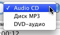
2 Выберите звуковые файлы
Выберите несколько совместимых с QuickTime файлов (если выбрать
видеофайлы, из них будут извлечены звуковые дорожки)
Заметьте: защищенные файлы не поддерживаются.
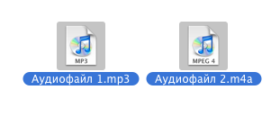
3 Перенесите их в список:
«Бросьте» выбранные файлы в окно списка, Burn проверит, могут ли они
быть записаны.
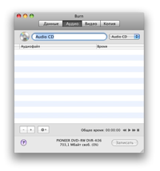 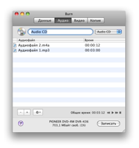
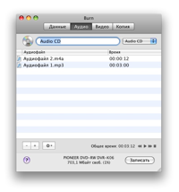
4 Щелкните «Записать»
Откроется диалоговая панель.
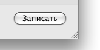
5 Выберите параметры
Выберите параметры сессии. Дополнительные настройки можно найти в окне
«Настройки», доступном через меню Burn.
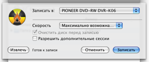
6 Запишите диск
Снова щелкните «Записать», чтобы начать процесс записи.
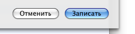
7 Burn
произведет запись диска
В процессе записи Burn будет показывать ее ход в информационной
панели.
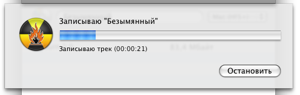
Запись дисков MP3 и DVD-Audio:
1 Выберите «Диск MP3» или «DVD-Audio»
Выберите «Диск MP3» или «DVD-Audio» из выпадающего меню.
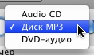
2 Выберите звуковые файлы
Выберите несколько звуковых и/или видео файлов. Поддерживается
большинство форматов.
Заметьте: защищенные файлы не поддерживаются.
3 Перенесите их в список:
«Бросьте» выбранные файлы в окно списка. Если файлы уже в нужном
формате, они будут сразу добавлены. Иначе Burn предложит их
конвертировать.
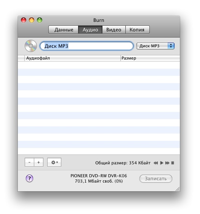 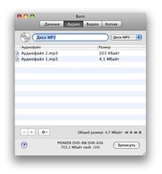
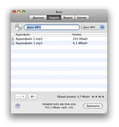
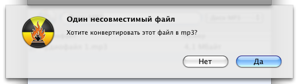
4 Щелкните «Записать»
Откроется диалоговая панель.
5 Выберите параметры
Выберите параметры сессии. Дополнительные настройки можно найти в окне
«Настройки», доступном через меню Burn.
6 Запишите диск
Снова щелкните «Записать», чтобы начать процесс записи.
7 Burn
произведет запись диска
В процессе записи Burn будет показывать ее ход в информационной
панели.